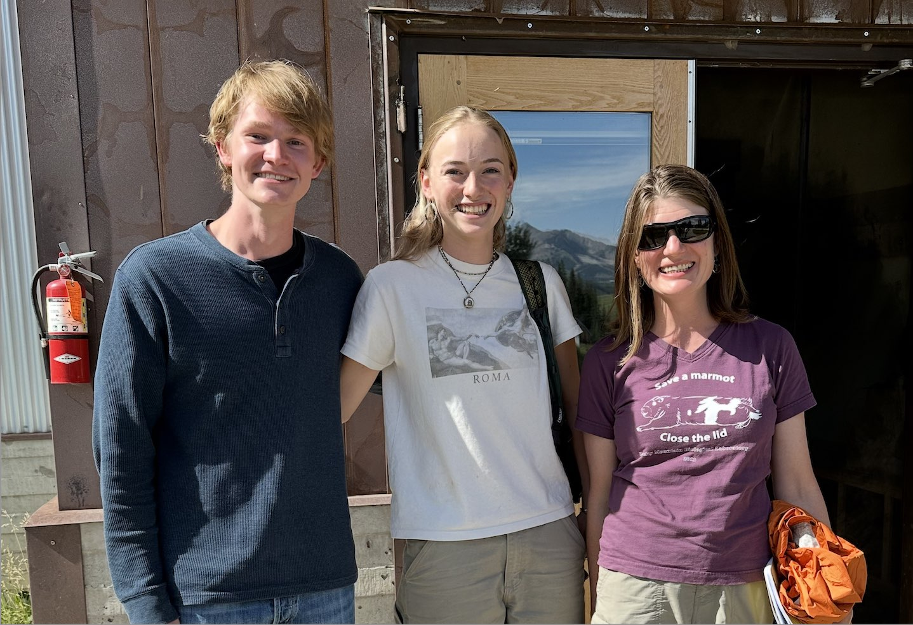
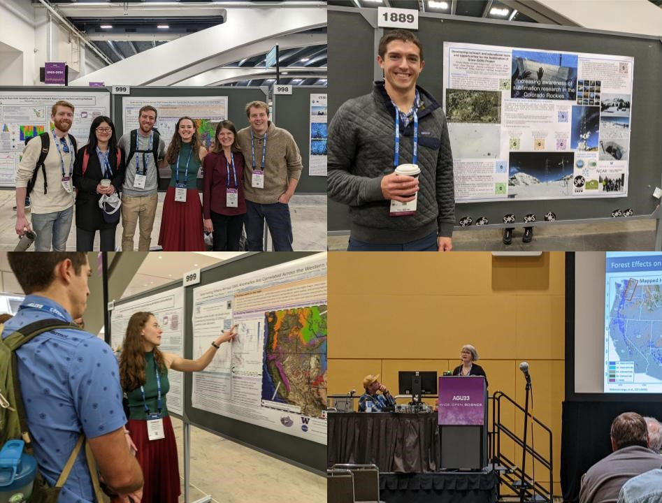

New Paper from Eli Schwat: Estimating Snow Sublimation in Complex Terrain
A new paper by Eli Schwat and collaborators, Estimating Snow Sublimation in Complex Terrain: A Season of Intensive Field Measurements and the Role of Vertical Water Vapor Flux Divergence, has been published in the Journal of Hydrometeorology. The study explores how snow sublimation shapes alpine water balance, drawing on intensive field measurements from Colorado’s East River watershed during winter 2022–23.
To celebrate the fieldwork behind this research, check out Danny and Eli: the Movie , which captures the challenges and teamwork of the Sublimation of Snow campaign.
For a broader overview of this work and its connection to other SOS findings, see the UW feature story “From field to film, measuring ‘missing snow’,” which also includes photos and a short documentary.
Summer 2025 REU: Izzie Investigates Coastal Fog on San Juan Island

Izzie’s REU project focuses on unraveling the mystery behind coastal fog patterns around San Juan Island. By combining time-lapse camera data, temperature and humidity sensors, and Landsat imagery, she is examining how air and sea surface temperatures interact to influence fog frequency and duration. Her findings aim to explain the striking microclimatic differences observed around the island’s coastline.
Well done, Izzie!
Summer 2025 REU: Gus Explores Snow and Green-Up in the East River Basin
This summer, Gus has been analyzing time-lapse imagery from the East River basin to understand how snow cover and vegetation greenness change throughout the year. Using a pixel-level algorithm that processes RGB values, Gus is distinguishing snow from non-snow areas and measuring green-up patterns across the landscape. His work sheds light on the spatial and temporal variability of snowmelt and vegetation dynamics in mountainous ecosystems.
Great work, Gus!
May 2025: Emma Passes her Master’s Thesis Defense
Congratulations to Emma on successfully defending her Master’s thesis! Emma’s research, “Mapping Snow Cover at Fine Resolution in Complex and Forested Terrain,” uses machine learning and optical imagery to explore model training and post-processing methods for mapping snow cover in regions where complex topography and dense forest canopy often obscure traditional observations.
May 2025: John presented on Undergraduate Research Symposium
Congratulations to John for presenting his research on cold-air pooling at the UW Undergraduate Research Symposium! His work investigates how cold air accumulates along valley floors at night, influencing local temperature patterns.
March 2025: Welcome Gus and Runxin to the Lab
We are excited to have Gus joining us as our future Field Data Manager and Runxin stepping into the role of Outreach Manager. Looking forward to all the great work ahead!
Welcome Gus and Runxin!
March 2025: John Awarded Mary Gates Research Scholarship
Congratulations to John, who has received a Mary Gates Research Scholarship to support his research on cold air pooling. His project focuses on temperature patterns in Colorado’s East River watershed and examines how cold air pooling influences modeled snow distribution.
Come to see the presentation on Friday May 16!
March 2025: Danny Finishes His Qualifying Exam
Congratulations to Danny on passing his his PhD General Exam this spring! Danny's work focusses on studying different physical processes in mountain hydrology that may be responsible for explaining anomalies in streamflow that are not explained by anomalies in precipitation, like sublimation, springtime ET, snow distribution, and fall weather conditions.
Congrats Danny!
Winter 2025: Emma & Hannah Begin their Research in Norway through Valle
Emma and Hannah have arrived in Norway and are settling into their research with Valle Scholarship and Scandinavian Exchange Program! Emma recently visited Fonnbu, NGI’s avalanche research station, where she explored snow pits and learned about the data collected by the snow and avalanche group. Meanwhile, Hannah is preparing for a trip to the Finse field station to assist with a snow pit class. When not in the field, both have been working from their desks and exploring Oslo!
March 2025: Willow Competes at Regionals for UW Women's Alpine Race Team
Congratulations to Willow for competing with the Husky Ski Team at this year's United States Collegiate Ski and Snowboard Association Northwest Conference Regionals in Steamboat, Colorado! The women’s team successfully qualified for the USCSA Nationals at Mt. Bachelor, Oregon!
Congrats Willow!
February 2025: Clinton Passes his Master’s Thesis Defense
Congratulations to Clinton on successfully defending his Master’s thesis! Clinton’s research follows, “The Impact of Warming Temperatures on Snowpack Structure,” addressing critical questions such as: how is stratigraphy (the layered structures within the snowpack) sensitive to warming, does warming equal more crusts (hardened layers formed within the snowpack which impact snow stability, wildlife movement, and winter recreation), and how does this sensitivity vary geographically and climatically?
To learn more, watch Clinton’s defense here!
Congrats Clinton, can’t wait to see where your research takes you!
October 2024: Professor Lundquist Honored for Hydrology and Mentorship
Professor Lundquist was recognized with three prestigious honors for her thoughtful and exceptional contributions to hydrology and scientific mentorship: receiving the AGU Ambassador Award, getting inducted into the AGU College of Fellows, and named the Robert E. Horton Lecturer in Hydrology by the AMS.
Lunquist’s pioneering research on snow and water dynamics, partnered with her dedicated, collaborative, and inclusive efforts to support and grow the next generation of hydrologists has played a critical role in the Snow Science community.
To learn more about her impact and these honors, read here! Well done, Professor Lundquist!
Spring 2024: MTNHYDR Alumna Jenna named in TIME's 100 Most Influential People in Health
Jenna Forsyth, one of our Cedar River Project alumna, has been recognized in TIME's 100 individuals who have made the most significant impacts in Health in 2024. Her groundbreaking work on lead exposure in Bangladesh revealed extreme lead chromate contamination in their turmeric, posing significant and previously unattributed health risks. This discovery spurred government reforms, including a ban on lead chromate and strengthened food safety regulations and educational efforts within their population.
“For me, the most significant achievement out of all of this has been translating scientific evidence into action at a national scale."
Congratulations Jenna on your amazing research, impacts, and well-deserved recognition. We're excited to see where you go next! To learn more, visit UW CEE.
Summer 2024: John and Willow complete REU program at RMBL

Congratulations to John and Willow for successfully completing their Research Experience for Undergraduates program at the Rock Mountain Biological Laboratory in Gothic, CO, this summer!
Over the course of 8 weeks, they conducted independent research projects. John investigated surface temperature variability across the East River watershed, examining patterns in spatial and temporal temperature dynamics. Learn more with John's presentation here!
Willow explored the effects of oxygenated waters on Iron(II) concentrations in beaver-impacted floodplains, studying the diurnal interplay between hydrology and biogeochemical processes. Learn more. Learn more with Willow's presentation here!
Well done, you two!
August 2024: Danny's Research Published in GRL Gains National Attention
Danny's study, recently published in Geophysical Research Letters, surrounding the crucial role of spring rainfall in driving snowmelt in the Colorado River has been making waves in the media. The findings suggest that the timing of spring precipitation can significantly impact water levels in the river, offering key insights for future water availability predictions. The study has been highlighted by Inside Climate News, Newsweek, KUNC, and the University of Washington News.
To learn more, check out Recent Upper Colorado River Streamflow Declines Driven by Loss of Spring Precipitation!
May 2024: Ross Passes His PhD General Exam
Congratulations to Ross on passing his his PhD General Exam this spring! Ross's work focusses on leveraging high-resolution snow models to better represent heterogeneous processes in a channging climate.
For more details, check out Ross's recent publication, Parallel SnowModel (v1.0): a parallel implementation of a distributed snow-evolution modeling system (SnowModel). Congrats Ross!
April 2024: UW MTNHYDR Attends the 91st Western Snow Conference, Hannah awarded 'Best Poster'
Last week, UW MTNHYDR attended the 91st annual Western Snow Conference (WSC), sporting bolo ties & suspenders in style, with beautiful presentations from past and present members, alike. Ross and Danny postered for ‘Snow Ablation & Runoff,’ while Eli presented for ‘Snow Ablation, Runoff, and Forecasting,’ and Hannah presented for ‘Snow Environments and Climate.’
We’re thrilled to share that Hannah Besso’s outstanding work earned her the ‘Best Poster’ award at the conference. Congratulations Hannah!
March 2024: Matthew Graduates with the BSENVE

Congratulations to Matthew for graduating with a Bachelor of Science in Environmental Engineering!
“I’m very grateful for the support everyone has given me... I also cherish the community I’ve found with MTNHYDR and in the broader fishbowl. I aim to use the knowledge I’ve gained at UW to help urban ecosystems thrive and make cities more liveable. I’ll be working towards these goals at Osborn Consulting in Bellevue– gaining experience designing green stormwater infrastructure, measuring storm water contamination, and integrating community feedback into each project.”
Mathew has contributed greatly to the MTNHYDR website and team, and we can’t wait to see where the future takes him!
March 2024: MTNHYDR Alumnus Joe Returns for a Visit
Alumnus Joseph Ammatelli said hello at our last group meeting, and shared his new career and extracurricular adventures! Joe and a friend recently completed canoeing the length of the Yukon River (over 3,000 km) in roughly 50 days. He now heads to start work at the Desert Research Institute as Assistant Research Scientist, specializing in Snow Hydrology/Soil Science. Congratulations, we're excited to see where your adventures take you next!
January 2024: Willow Joins the Team

We're excited to welcome Willow to the Mountain Hydrology team! Willow is an undergraduate in Environmental Engineering and Interdisciplinary Honors, and will be contributing to the development, maintenance, and upgrades of the MtnHydr website, X account, and Youtube. In her free time, Willow enjoys enjoys all things outdoors: sailing, climbing, hiking, alpinism, skiing, riding, swimming, and, at the end of it all, a good book.
January 2024: Emma Completes Snow Measurement Field School
Earlier this January, Emma studied with the CUASHI & SINTER snow measurement field school. The program provided opportunities to get out in the field, train with new measuring techniques for critical snow measurements (like depth, density, and snow water equivalent), and network with professionals and graduate students with snow measuremnet research objectives.
Biggest takeaway: "Often times you have to make judgment calls in the field, and while you can't anticipate everything, there are certain measures you can always take to prepare your team for a successful campaign!" - Emma
December 2023: Professor Lundquist and Professor Prugh Featured in University of Washington News
Recently, University of Washington News featured Professors Lundquist and Prugh's research on how snow impacts predator-prey relationships. Give it a read to learn more about how they are identifying the snow conditions under which prey struggle to escape predators. For even more information on the project, please visit the snow information for wildlife systems reseach page.
December 2023: Mountain Hydrology Goes to the American Geophysical Union Conference in San Francisco

Upper right: Emilio with his sublimation of snow poster
Lower left: Hannah explaining her poster on snow anamoly correlations in the Western US to Emilio
Lower right: Susan giving a talk on forest-snow interactions in Washington
Last week, current and former members of the Mountain Hydrology Research Group met at the annual American Geophysical Union (AGU) meeting. At the event, Danny, Eli, Hannah, and Ross postered while Susan Dickerson-Lange presented on forest-snow interactions in Washington State. Overall, it was a great chance to demonstrate the group's research and learn from other earth scientists!
November 2023: Hannah Publishes Paper on Improving Snow Sensing with Satellites
Recently, Hannah published a paper on how satellite snow data can be improved with SlideRule Earth service. Give it a read to learn about this method and how it could improve snow and water forecasting. For more information on Hannah's current work, you can also listen to Northwest Public Broadcasting's radio short or read TS2's article.
November 2023: Cassie Passes her PhD Defense!
 Photo by Mark Stone
Photo by Mark Stone
Congratulations to Cassie for successfully defending her PhD! Over many years, Cassie has studied how forest canopy influences snow accumulation and melt in different climates. Recently, her work has uncovered key insights into how forest thinning affects snow accumulation and duration in the Eastern Cascades. Cassie has contributed so much to the Mountain Hydrology Research Group, and we're excited to see how she continues her work. To learn more about Cassie's research, read "Balancing Fire and Ice" or watch the recording of her defense.
October 2023: KUNC Features Paper on Using Early Season Snow to Predict Total Snow Accumulation
Photo by Mark Stone
KUNC, an NPR news outlet in Northern Colorado, just featured Professor Lundquist's recent paper on using autumn snow accumulation to predict peak seasonal snow depths. Check it out to learn more about the study's potential implications for water management, agriculture, and skiing throughout the West!
September 2023: Paper on Estimating Snow Accumulation with Early Season Snow Published
Professor Lundquist's new paper "Seasonal Peak Snow Predictability Derived From Early-Season Snow in North America" is now available and is featured in the UW News! Read it to learn more about how different meteorological conditions across Western North America impact the prediction of snow accumulation using early season (October to December) snowfall patterns.
September 2023: Danny Passes his Master's Defense
Congratulations to Danny Hogan for successfully passing his master's defense! His research focuses on how snow sublimation and evapotranspiration impact the accuracy of water forecasting within the Upper Colorado River Basin. Over the past winter, Danny delved into this topic by collecting snow data at the Rocky Mountain Biological Laboratory (RMBL) outside Crested Butte, Colorado. To learn more about Danny's work, please watch his master's defense, visit the Sublimation of Snow (SOS) project page, or explore the SOS weather blog.
August 2023: Cassie's Research is Featured in the Article "Balancing Fire and Ice"
Photo by Mark Stone
Earlier this month, UW's Department of Civil and Environmental Engineering explored Cassie's research in "Balancing Fire and Ice." It's a great oppurtunity to learn about how Cassie's work on forest-snow interactions could provide key insights for wildfire and water resources management.
July 2023: Data Collection for the SOS Project Concluded

In Gothic Basin, Colorado, researchers from the National Center for Atmospheric Research (NCAR) just finishing diassembling the Sublimation of Snow (SOS) project's remaining field equipment. Take a look at the Aspen Global Change Institute's (AGCI) recent article for more information on the future of the project and the process of field equipment disassembly.
July 2023: "Defining the Danger Zone" is Published
 Illustration by Sarah K. Glaser
Illustration by Sarah K. Glaser
The article "Defining the Danger Zone: Critical Snow Properties for Predator–Prey Interactions" is now live! Click here to read more about how the Mountain Hydrology Research Group and UW's School of Environmental and Forest Sciences measured the impact of snow conditions on predation.
June 2023: Cassie Featured in "Frozen Frontiers: Decoding the Snowpack of the Eastern Cascades"
Recently, Cassie Lumbrazo's research was featured in a 6-minute film produced by University of Washington Media. Give it a watch to learn about Cassie's awesome work on the forest management implications of forest-snow interactions!
May 2023: Steven Passes His PhD Defense
Congratulations to Steven Pestana for successfully defending his PhD dissertation! Steven's research analyzed how geostationary satellites with high temporal resolution can be used to determine snow surface temperatures. The Mountain Hydrology Research Group is proud of Steven's dedication, and we're excited to see what he does next! To learn more about Steven's work, check out the recording of Steven's defense or the Infrared Snow Imaging research page.
May 2023: Welcome Emma and Clinton!

We're excited to add two new graduate students, Emma Boudreau and Clinton Alden, to the group next fall. Emma is from Massachusetts and just finished her B.S. in civil engineering at the University of Massachusetts-Amherst. During undergrad, Emma studied stream discharge in High Mountain Asia using remote sensing techniques and traveled to Northern Alaska to collect field data. She's excited to use these experiences while studying the remote sensing of snow.
Clinton received his B.S. in atmospheric science from the University of Utah. In addition to teaching avalanche and snow courses, he has researched the atmospheric dynamics of Californian atmospheric rivers with the Center for Western Weather and Water Extremes at UC San Diego.
Welcome to the team! We're excited to see where graduate school takes you.
March 2023: Cassie Passes Her PhD General Exam
 Photo by Mark Stone
Photo by Mark Stone
Congratulations to Cassie Lumbrazo on passing her PhD General Exam! Cassie’s work focuses on forest-snow interactions and how forest management practices implemented to reduce wildfire risk impact snow on the ground. For more details, check out the Forests and Snow research page.
February 2023: Aspen Global Change Institute Article on the SOS Project
Check out Aspen Global Change Institute's article about our ongoing research regarding how snow sublimation in the mountains affects summer stream flows. Even more information on the project can be found at the Mountain Hydrology Research Group's Sublimation of Snow research page or the Sublimation of Snow data page.
February 2023: Applicants are Being Selected for the REU-Blinks Undergraduate Research Program

This summer, Professor Lundquist will be at the Friday Harbor Lab in the San Juan Islands researching the conditions that lead to marine fog. Now that the REU-Blinks Undergraduate Research Program application is closed, two dedicated undergraduates are being selected to help with the research. Over the course of the summer, they'll deploy and analyze data from timelapse cameras, air temperature sensors, and air humidity sensors. Stay tuned to see who will join us this summer to help with the marine fog research! To learn more about the REU-Blinks Undergraduate Research Program, visit the REU-Blinks program webpage; Professor Lundquist's research is labeled #7 on the linked webpage.
January 2023: Eli and Danny Start Field Work at RMBL

Eli and Danny just arrived at the Rocky Mountain Biological Laboratory (RMBL) in Crested Butte, Colorado. For the next few months, they will be collecting data on how snow sublimation impacts snowpack and water availability. Click here for more information on the project.
December 2022: Professor Lundquist is Featured in the 2022 Mountain Views Chronicle
Last month, the 2022 volume of the Mountain Views Chronicle was published with the theme of “research in the extreme.” The Mountain Views Chronicle is an annual journal that showcases the technical and artistic works of researchers focused on mountain topics. In addition to Professor Lundquist’s article “An Extreme Number of Sensors in One Spot,” the 2022 volume contains a variety of insight research, poetry, and art. This 2022 Mountain Views Chronicle can be accessed at this link.
December 2022: Matthew and John Join the Team

Please Welcome Matthew and John to the Mountain Hydrology team! Matthew is a undergraduate in environmental engineering, and he will be maintaining and upgrading the team's website. In his free time, Matthew enjoys backpacking in the Cascades, canoeing in Puget Sound, and playing his banjo. John is an Atmospheric Sciences undergraduate who will work on the Zooniverse Snow Spotter Citizen Science project. On the weekends, you can find him playing cello, backpacking, and skiing. We can’t wait to see how Matthew and John add to the team!